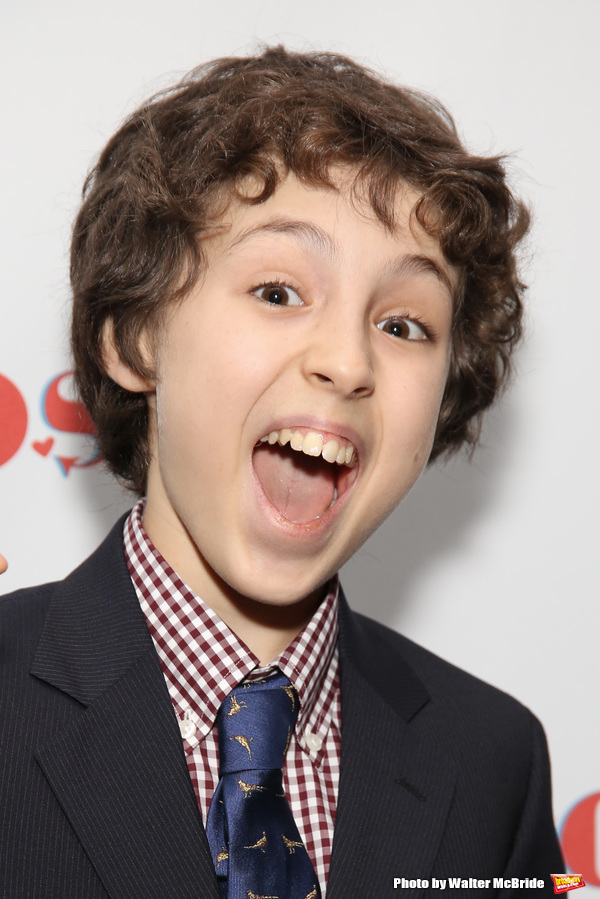

Bare A pop opera
The heathers
Home
Falsettos is a musical by William Finn and James Lapine, and music and lyrics by Finn. Falsettos is the story of a family who is devided when Marvin (a main lead) has an affire with another man, and the struggles that follow the family and friends.
Marvin the crazy man who destroys his family and ruins everything.
Trina was marins wife, mother of jason, and now wife of Mendel.
whizzer is the man whom Marvin has decied to leave his wife for. He leaves an impact on the family n a way they never saw coming.
mendel is Marvins psychiatrist who marrys Trina
Jason is the son of Trina and Marvin, Jason has to deal with growing up without a father figure present. It is also about his strugle through 'adulting'